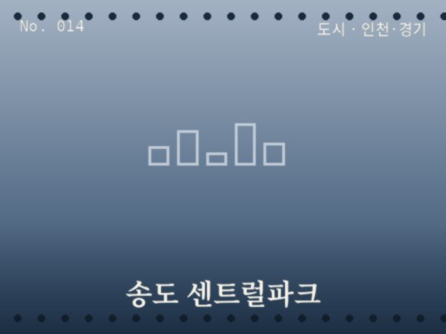
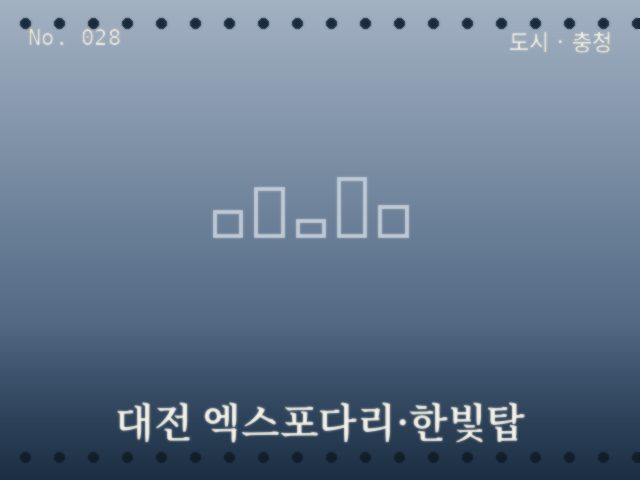
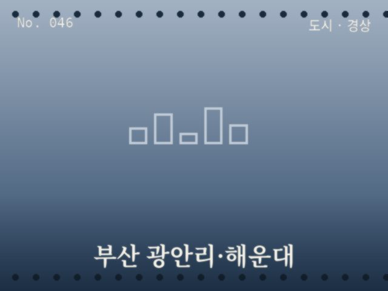
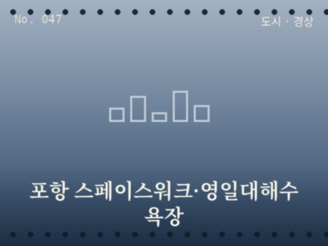
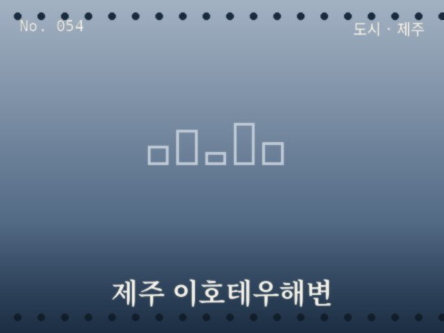

도시
서울
남산서울타워
서울 전역이 내려다보이는 야경의 정석

도시
서울
낙산공원
성곽 너머로 도심이 겹쳐 보이는 언덕

도시
서울
반포 세빛섬
한강 위에 뜬 인공섬과 무지개분수 야경

도시
인천·경기
월미도
놀이기구와 바다가 함께 보이는 항구 풍경

도시
인천·경기
송도 센트럴파크
고층빌딩을 배경으로 한 수로 야경

도시
강원
춘천 소양강 스카이워크
강 위에 놓인 유리다리와 조명

도시
충청
대전 엑스포다리·한빛탑
강 위로 뻗은 다리와 타워 야경

도시
전라
여수 밤바다·오동도
케이블카 너머로 반짝이는 항구 야경

도시
경상
부산 광안리·해운대
다리 조명과 백사장이 만나는 해변

도시
경상
포항 스페이스워크·영일대해수욕장
거대한 나선형 조형물과 해변 야경

도시
제주
제주 이호테우해변
목마 모양 등대가 불을 밝히는 해변